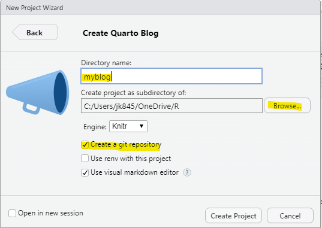
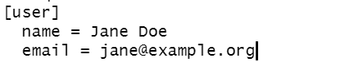
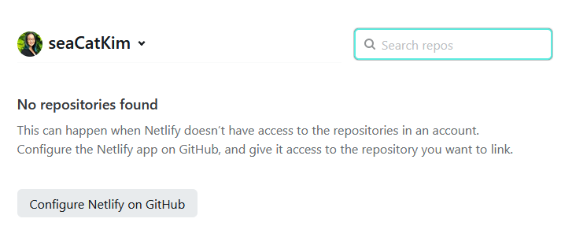
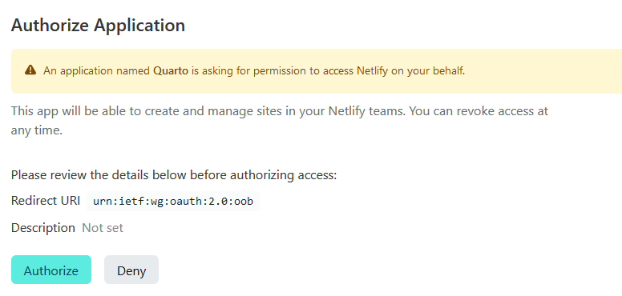

# install.packages("leaflet")
library(leaflet)
library(magrittr)
leaflet() %>%
addTiles() %>% # default background map
addMarkers(lat = -27.552, lng = 153.0535,
popup = "Location of ResBazQld 2022")We will be covering some basics of multiple programming skills (Git/GitHub, R, Markdown, etc…) with the aim of empowering people to contribute to quarto websites such as this one - the Brisbane Spatial Share Community of Practice. The idea is to encourage community members to contribute material directly instead of funneling everything through a website administrator.
Background of the Community of Practice with founder, Mitchel Rudge. See the About page for more info.
So the group already has a website… why another blog? Essentially, we found blogdown to be buggier than we wanted. Also, the folder structure was not very intutitive and are unique to each hugo theme. Finally, for the needs of our Spatial Share group the multi-lingual aspects of quarto were an important draw.

Research Bazaar Queensland 2022
This session was run as a workshop for ResBaz Queensland 2022. ResBaz is a global festival promoting digital literacy at the centre of modern research.
What we will cover:
- Quarto basics
- Git and GitHub basics
- How to create/edit a post on a quarto website
I have pieced this together using many other resources on the above which are mentioned throughout. This is also coming from a learning-as-we-go approach and by no means expert opinion. Thank you to Mitch and Christina for their help with this tutorial and workshop!
What you will need:
Creating a blog with quarto
What is quarto?
Quarto is a “multi-language, next-generation version of R markdown from RStudio.” It is designed to be programming language (compatible with R, python, Julia, and more…?) and tool agnostic (RStudio, VSCode, jupyter, Observable). In this tutorial, we are focusing on Quarto and RStudio.
The basic model of Quarto publishing is taking a source document and rendering it to a variety of outputs like html, pdfs, and Word. The backend process is illustrated below. The key difference from R Markdown is that it uses pandoc. For those interested in the details, I would recommend the Welcome to Quarto! 2 hr workshop on Youtube led by Tom Mock at RStudio.

FAQ for R Markdown users.
Make a quarto blog in RStudio
RStudio has quarto built-in with recent versions after 2022.07. Go to File > New Project or the R in a blue cube under ‘Edit’ and you will see Quarto options right there!

Let’s click on the Quarto Blog option. In the next window, name you project (e.g., myblog), select where to save the project with the Browse button, and ensure ‘Create a git repository’ is checked. More on git later.

The default project is populated with some example files and folders. The open index.qmd file is the ‘home page’ of the blog that will list all the posts. The .qmd is the file extension for a Quarto file just like .Rmd for R Markdown. Go ahead and change the first title field in the YAML. For instance, change ‘my blog’ to ‘My Blog’.
Note
YAML stands for ‘Yet Another Markup Language’ and is delineated by a triple dash (—) at the beginning and end of the YAML section. This is where you define settings for you quarto document/post.
Now, let’s look at one of the template posts. In the Files pane click on posts > welcome > index.qmd. Here we can see a template for a ‘Welcome’ post.
A recent addition to RStudio is that you can view the ‘Source’ (top left pane) as either the Source code or Visual editor. These views can be swapped by toggling the buttons at the top right of the pane. The Source code (blue box below) displays all the source code for your quarto file such are your R code (in chunks - none in this example) and Markdown narrative text.
Note
A code chunck is delineated by three backticks (button to the left of 1) and {} with the language for the code chunk (R, python etc.). Click the green C+ button to the left of run to add a new R chunck. Or keyboard shortcut Ctrl/Cmd + Alt + I.

The Visual editor displays a rendered version of your quarto file - more like what it will look like when the site is published. This is more similar to writing in a text editor like Word. You can also see there some extra formatting buttons in the Visual Editor like bold/italics and super/subscripts. The ‘Table’ function is also a welcome edition as formatting tables in Markdown is very finicky and tedious.
Try inserting a table or super/subscript (Format > Text > Strikethrough/Superscript/Subscript/Smallcaps) in the Visual editor and then toggle to the Source code. Now you can see the associated Markdown code for whatever you just did! Super handy.
Now, open the _quarto.yml file. Here we can see the project type (a website), some website formatting (the navigation bar), and some other customization fields. Update the title field to match the title we edited earlier. In my case, it was ‘My Blog’. Feel free to edit other fields such as your GitHub, Twitter, LinkedIn profile links etc. You can also change the theme to one of many built-in themes.

Don’t forget to save your files when you make changes. If the file name in the tab is red - that means you have unsaved changes.
Note
Don’t forget to save your files when you make changes. If the file name in the tab is red - that means you have unsaved changes.
The Visual editor is pretty cool, but it’s not exactly the same as previewing your website before publishing. Click on the Render button at the top and see what happens.
A preview of your blog should have popped-up in a web browser. You can navigate like you would a website to see all the features. Go to the about page - we can see it is the default page with the Quarto blog project. If you’d like, open the about.qmd page in the project directory and make a change. Add some text, delete a link (like LinkedIn) and then save your changes.
Congrats - you’ve made a blog!

In the top right view pane of RStudio, you can see Render and Background Jobs tabs. If you’d like to get an idea of what is happening in the background, check out these tabs. In the Backgroun Jobs tab, there is a red stop sign in the top right corner to stop previewing your site.
But how do I share it with the world?? First, we will need to version control our project with git and store it in a remote repository.
Git - what is it?
A version control software (think track changes) useful for collaborating on and sharing code.
Git is the software itself that records changes to a set of files locally. There are several hosting platforms that are like online repositories (think Dropbox, Google Drive, etc.) that work with Git: Bitbucket, GitLab, and GitHub to name a few.
These platforms not only allow for version control but also to collaborate, organize, and back up projects.

In this case, we will be using GitHub to access the website files, make some changes (i.e., add a post), and then incorporate those changes back to the website repository on GitHub which will automatically update the website itself. 🙌
There are lots of fabulous and free resources online that go more into depth on Git:
- If you need to be convinced to use Git for version control see this article and Happy Git and GitHub for the useR to git started both by Git/R guru Jenny Bryan.
- See Caitie Kuempel’s R Ladies Brisbane presentation on getting started with GitHub in RStudio.
Git Terminology
Repository/repo - where a project is stored in GitHub. Think of it like a folder holding all the relevant documents that you can version control, view history, and add collaborators. The repository or repo holds all the relevant files for the website - most of which we will not touch.
Commit - is one or more changes to a file or set of files that you are asking GitHub to keep track of.
Push - sending your committed changes to a remote repository on GitHub. Local changes updated on the GitHub website where other people can access.
Pull - incorporating and merging changes. An edit on the remote repository on GitHub can be pulled to a local repository.
Diff - difference, or changes made that are visible as insertions/deletions for a commit.
Main - the default branch you are on. Master has recently updated to main, but they are the same thing. You are more likely to come across master on older resources. Jenny Bryan strongly urges you to create a new branch to work off of which requires using command line. For the purpose of contributing to a quarto website, I will forgo covering this as it is unlikely more than one person will be contributing at the same time.
Origin - the remote repo online from which you have cloned your local copy from.

Usethis on our blog project
Usethis is a workflow package designed to automate repetitive tasks for package development and project setup. Here, we’ll be using it for the latter.
Note
You might need to install usethis. Check by search in the Packages window in the bottom right pane in RStudio.
install.packages("usethis")
library(usethis)
Or you can install the development version: install.packages("devtools") if you don’t have devtools. devtools::install_github(“r-lib/usethis”)
Configure Git
If you have never used Git before you will need to configure your account. We can do this in R with usethis using your GitHub username and email. These must be the details associated with your GitHub account. You will only need to do this once.
usethis::use_git_config(user.name = "Jane Doe", user.email = "jane@example.org")
If you are not sure if you have configured Git, you can check with running usethis::edit_git_config() in the console. This will open your .gitconfig file and you can check the [user] details. If these are not right you can go ahead and change theme in the file and save.

Create a personal access token
We must also configure a personal access token or PAT with usethis. Type usethis::create_github_token() in the console. You will either need to log into GitHub or confirm your password. usethis will automatically select some scopes - which ones are selected? We can use these defaults - click the big, green Generate token button at the bottom.
Leave this page open or copy this and keep it a text file/password manager. We will use it again later. You can even use gitcreds::gitcreds_set() to store your PAT now.
Setup the remote GitHub repository
Now let’s setup a remote repo on GitHub using usethis::use_github. This section is straight out of 17.3 Happy git with R - create and connect a github repo with usethis.
How did that go? Did you get an error?
Don’t worry. We’ve forgotten to do an initial commit a common mistake. Click on the Commit button in the Git pane, select all (Ctrl/Cmd + Shift + A) and click Stage. We are going to stage all the files to push to our remote GitHub repo. This might be a bit slow since it is multiple files so be patient. Then, make a commit message in the top right of the window. Click Commit. This creates a record (or anchor in line with the climbing analogy below) in our project that we can view and go back to if we ever need to.

Once that’s complete, let’s usethis::use_github() in the Console again. How did it go this time?
Hopefully, you see something like this: 
Notice that part of what use_github() does is push the master or main branch to GitHub. (Master is legacy, but you may still see it around.)
Now go to the link there use_github() set the remote too (in the third line with a ✔️). You will see everything that you’ve commited is now in the online, remote repo! Have a look around. You can navigate, add a README.md file, and even edit files in GitHub.
Let’s go ahead and edit a file. Go to the ‘Welcome’ post, click on the pencil ✏️ to edit, and make a change. At the bottom you can add a commit message then commit your change.
Cool, but how do we get these changes we made on our remote repo into our local repo on our computer? This is where pull comes in. Back in the RStudio Git pane, you should see a blue down arrow labelled Pull. Click this button. This will update your local repo on your computer with the edit we made in GitHub. Look at your files and see if you can find the change we just made online. Pulling is especially important if you are working on a collaborative project. In general, you want to pull first before pushing to ensure you are working with the most up-to-date version of the project. Even if you are not in a collaborative project, it is a good habit to get into.
Those are the Git basics! In general, you want to use the following workflow when using git.
- Make a change in your files and save. The changes will not show up in the Git pane unless you save the changes.
- Stage the files you would like to commit. Can stage multiple files at a time.
- Write a concise, informative commit message and press the
Commitbutton. If you don’t get any glaringly obvious Error messages, it’s probably all good. - Pull pressing the blue down arrow before pushing with the green up arrow.
- Repeat!
Publishing
There are several options for publishing your quarto blog outlined here. Such as Quarto Pub and Netlify.
Note
Quarto Pub is a free publishing service for quarto content. It requires having a login and an access token. This is a relatively straight forward way to get your blog online. There are some limitations to the size and everything published on Quarto Pub is publicly visible. The link above outlines the steps to publish with Quart Pub. This method does not involve using git.
For this workshop, we will focus on Netlify. In your Netlify account, click on the teal Add new site button.
Import an existing project from a GitHub repository. You will probably need to configure your Netlify on GitHub. Can either configure all repositories or pick a specific repository.

Authorize Quarto to access Netlify.

Now that we’ve connected our GitHub to Netlify, go to the Site settings. At the bottom ‘Publish directory’ section put the _site/ folder where your website is rendered.

It will take a few minutes to deploy your website. Netlify automatically generates a random url like “lighthearted-travesseiro-492jfg3” which can be changed in the ‘Domain settings’. Or course, you can also use/pay for a custom url to remove the ‘netlify.app’ at the end of the url.
Now, make a change in the welcome post, render the site, commit the changes, and push the changes in the .qmd file. Look at your GitHub remote repo to check that the changes are there. Now check your website - did it update as well?
As we defined above, unless you also commited the updated contents of the _site/ foldr the website will not have updated. This folder is where all the rendered outputs are that are used to build the site on Netlify. Commit the updated _site/ folder and push. Now check your website again.

Add a map
This is a spatial community of practice - let’s add a map of ResBazQld 2022 to a post using leaflet.
Troubleshooting TBC
Resources
Quarto
- Building a blog with quarto, Youtube video, website - Isabella Valasquez, Rstudio
- Welcome to Quarto!, Tom Mock, RStudio